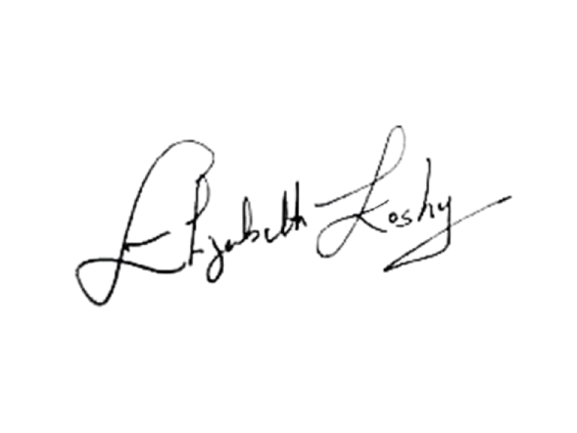

Dear Empress Community,
I know what it feels like to walk through perimenopause and menopause feeling unseen, unheard, and unsupported. Like many of you, I searched for answers, but what I found was a healthcare system that treated this transition as an afterthought — even though it touches the lives of over 60 million women in the U.S. alone.
That experience changed me. It ignited a fire in me to create what I wished I had — a safe, intelligent, and deeply caring space where women could turn for real answers, holistic solutions, and daily encouragement.
That's how Empress Health.AI was born.
This is not just another platform. It is my purpose-driven mission — to ensure no woman ever feels isolated in this chapter of life again. To give us the tools, the science, and the support we deserve. To remind every woman that midlife is not about decline, but about renewal, strength, and possibility.
With Empress Health.AI, you'll find:
- 24/7 support through Ask Empress, built to answer your questions when you need it most.
- Guidance from trusted experts and clinicians, so you never feel lost in your care.
- A curated marketplace, offering products and tools that honor your evolving body and spirit.
- Daily affirmations and journaling tools, to lift your mind and nurture your inner power.
This is more than technology. It's a movement — one rooted in empathy, science, and community.
To every woman reading this: You are not alone. Your voice matters. Your health matters. And together, we will redefine what it means to thrive through perimenopause and menopause.
With love, passion, and purpose,

Elizabeth Koshy Founder & CEO, Empress Health.AI